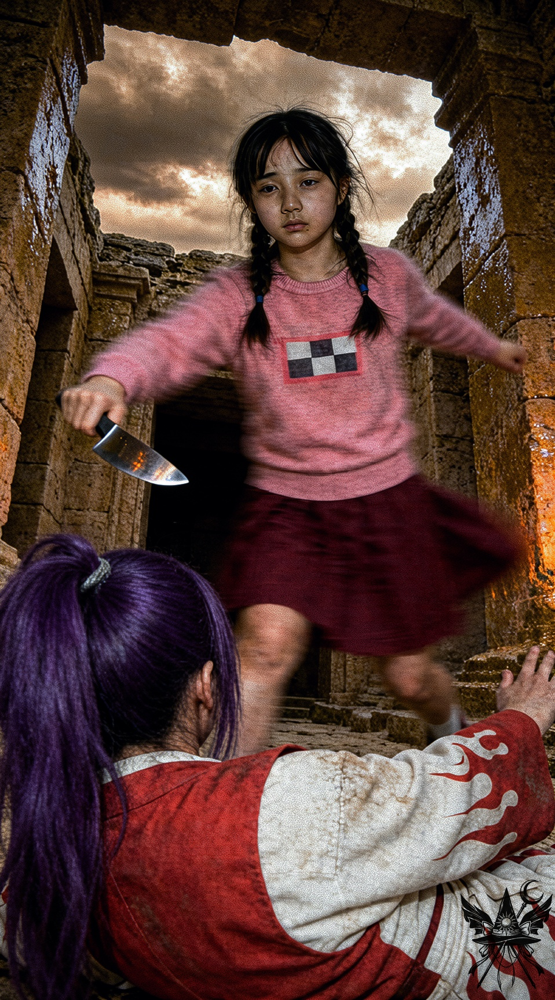
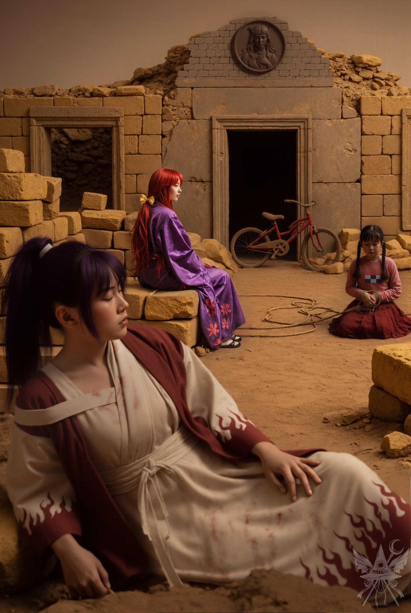

（小兎姫をうまく乗せないと）
やり直しの盤面。明羅と小兎姫は、昨日と寸分違わぬ様子でスタート地点に身構えている。
（カナが明羅に危害を加える瞬間を押さえれば、決定的な証拠になる。あの図々しいポルターガイストを排除するためにも、まずはこの婦警を誘導するべきね）
コンガラの合図とともに、二人は乾いた砂塵を巻き上げて橋へと飛び出した。明羅の背中があっという間に遠ざかり、小兎姫が長い裾を翻しながら余裕めいた足取りでその後を追う。
神殿の死角へ身を潜め、小兎姫が橋を渡りきるのを待ってから声をかけた。
「小兎姫さん！」
「小兎姫『警視』よ。一般市民が、捜査中の私に何かご用かしら？」
振り返った彼女の周囲だけ、荒涼とした地獄の空気が嘘のように澄み切っている。
淀んだセピア色の風景から切り離されたような、奇妙な安らぎ。昨日までの凄惨な記憶が頭をよぎるが、今は目の前の狂気に満ちた自称・警察官を動かさなければならない。
「小兎姫警視。あなたが追っている悪魔と、その裏で糸を引く黒幕について……独自の情報があるのですが」
「ほう、興味深いわね。参考人として、詳しく話を聞かせてもらいましょうか」
足元の乾いた大地を指し示す。
「まず、この地面に残っている溝ですが……蛇の尾が這った跡ではありません。自転車のタイヤ痕ですよ。あの特徴的な溝を見てください」
「確かに……言われてみれば、悪魔の這いずった跡には見えないわね。初動捜査の盲点だったわ。それで？」
納得したように頷き、視線を戻してくる。
「明羅は罠にかけられようとしています。警視、あなたも危険ですよ。この跡を残しているのは自転車に乗った小さな女の子で、あの丘の上の遺跡で明羅の命を狙って襲いかかってくるはずです。そして、その子を地獄へ誘い込み、背後で操っている黒幕こそが……カナ・アナベラルなんです」
小兎姫の眼光が、ふっと鋭さを増した。
「複雑な事件の匂いがするわね……。カナが黒幕？ それは重大な告発よ。確かに少し情緒不安定な様子だったけれど……まさか、殺しを企てるなんてね。動機は何かしら？」
「それはまだ断言できません。ただ、コンガラ様に執着しているようで、ライバルを排除したいと口走っていました。もっとも、軍隊を率いて幻想郷を攻撃する計画を嬉々として語っていたので、本心は別のところにあるのでしょうが」
すっと右手を上げ、静止のサインを出される。
「ストップ。今の話、すべて裏付けのない虚偽の告発になり得るわよ。捜査を動かすには決定的な証拠が必要ね。証拠はどこにあるのかしら？」
「証拠なら、すぐに手に入ります。私たちが介入しなければ、今日、あの廃墟の頂上でカナが仕組んだ殺人事件が起きます」
「まさか。あなた、予言者か何かなの？」
「どう思われるかは自由です。とにかく、警視が今すぐ現場へ向かうべきですよ」
「私が行く？ いいえ、行くなら『私たち』よ。これほど重大な告発をする以上、もし名誉毀損やでっち上げだった場合は……公務執行妨害であなたを逮捕することになるわ。さあ、その自転車の少女の現場へ案内しなさい」
楽しげに唇を歪め、先を急がせる小兎姫。
（やはり、この地獄の住人はどこか正気ではないわね）
乾いた風が吹き抜ける荒野を早足で進む。やがて、ごつごつとした岩場が視界を遮り始めた。カナの潜伏を警戒しながらも歩みを緩めず、かつての首都の痕跡である丘の頂へと到達する。そこには昨日見た円形の不自然な跡はなく、薄い埃の上に明羅の足跡だけが残されていた。
「あそこです。カナは……何らかの『扉』を使ってあの子を誘い込んだはず。事件は、あの奥で……！」
「まるで見てきたような口ぶりね」
皮肉めいた囁きを残し、小兎姫は気配を絶って入り口へと忍び寄る。
＊＊＊
「お名前は？ ……ねえ、どうしたの。怖がらなくていいのよ」
奥から聞こえてくる明羅の声は、いつもの大仰な武士言葉とは似ても似つかない、年相応の優しい響きだった。
「明羅姉ちゃんが、守ってあげるから……！」
その言葉を断ち切るように、鋭く空気を裂く音と、湿った石の匂いが鼻腔を突いた。

息を呑むような殺意の静寂。すぐ近くで炎が燃え盛っているかのような錯覚に陥るほどの熱気が、冷たい石壁の間に充満している。理不尽なまでの暴力の気配が、無防備な背中へ容赦なく振り下ろされようとしていた。
（今だ！）
目配せと同時に、廃墟の中へ飛び込む。揺らめく松明の炎が、凄惨な影を壁に落とした。
「メデア！ 明羅を連れて離れて！ 早く！」
小兎姫の鋭い命令が飛ぶ。
床に伏した明羅の手首を掴み、渾身の力で狂気の気配から引き剥がす。空を切った刃が石壁に深く突き刺さる鋭い音が響き、次いで小兎姫が手早く対象を制圧する気配がした。
明羅を廃墟の外へ引きずる。彼女は苦痛に顔を歪め、鎖骨の下を強く押さえていた。衣服の隙間から、どくどくと生温かい鮮血がとめどなく溢れ出している。
「大丈夫……痛くない……わ」
虚勢を張る声は、ひどく弱々しい。
「警視、包丁を！ 早く！」
叫びながら、止血帯を作るために明羅の帯へ手をかける。小兎姫から素早く手渡された凶器で布を切り裂き、傷口へ強く押し当てて縛り上げた。
なんとか致命的な出血は抑え込んだものの、明羅の意識はすでに暗い底へと沈んでいる。傍らでは、荒縄で縛り上げられた元凶が静かにすすり泣く音だけが響いていた。

嵐が過ぎ去った後のような、奇妙に気だるい静寂。乾いた黄土色の空間に、血の匂いだけが不釣り合いに漂っている。
「手際がいいじゃない、メデア」
（この女……初めて名前で呼んだわね）
「でも、この子は利用されただけでしょう？ カナが黒幕だという証拠はどこにあるの？」
返事の代わりに、廃墟の奥へ足を踏み入れる。床には燃え尽きかけた松明が転がっているだけで、魔法の痕跡は綺麗に拭い去られていた。
（完璧なやり口ね）
片隅に放置されていた小さな自転車を引きずり出しながら答える。
「ええ、カナの仕業に違いありません。ですが、決定的な証拠がない以上、あの狂信的な将軍を納得させるのは難しいでしょうね」
「今は推理より人命優先よ。早く神殿に戻りましょう。あそこの泉なら、どんな傷でも治せるらしいわ。それに、この容疑者を引き渡して、事の顛末を報告しなくちゃいけないし」
（コンガラに報告したところで、事態が好転するとは思えない。カナはまた別の罠を仕掛けてくるはずだわ。いっそこの狂った地獄から逃げ出してしまおうか。静かなる軍の目的は概ね把握したし、幽香への報告という任務は果たせる。カナが勝手に騒ぎを起こせば、神殿は自滅するでしょうし。
……でも、あのキクリの言葉が頭から離れない。この地獄を元に戻すには、魔界でアメジストを探す必要がある。そのためには、あの怪しい儀式をもう一度……。いや、カナを野放しにしておくのは危険すぎるわ。神殿に戻って、あの忌々しいポルターガイストの化けの皮を剥がすべき……？）
思考が堂々巡りを繰り返す中、明羅の重い身体を支え上げる。
「肩を貸して。一緒に運びましょう。早くしないと、明羅の命が危ないわよ」
小兎姫の事務的な声に急かされ、重い足取りで来た道を引き返し始めた。
[SYSTEM ALERT: 音響兵器デプロイ完了]
▼ 本章の絶望を1000%味わうための専用聴覚データ ▼
■ YouTube：『鉄格子のラプソディ』